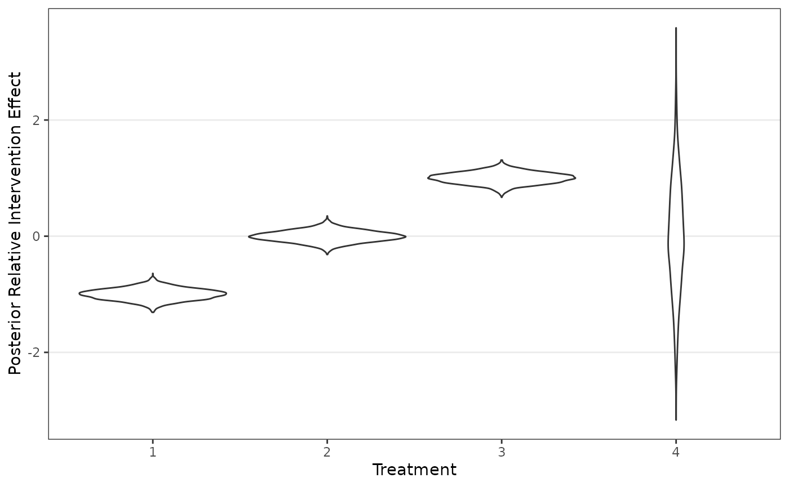

In this tutorial, we demonstrate the key functionality of the
RaCE.NMA package on a hypothetical dataset of results from
a network meta-analysis (NMA). The tutorial includes code for model
estimation and visualization of results. We begin by loading necessary
packages.
mu_hat <- c(-1, 0, 1, 0)
sigma_hat <- c(0.1, 0.1, 0.1, 1)
data <- t(matrix(rnorm(10000,mean=mu_hat,sd=sigma_hat),nrow=4))
ggplot(as.data.frame(melt(data)),aes(x=factor(Var2),y=value))+
geom_violin()+theme_bw()+theme(panel.grid.minor = element_blank(),panel.grid.major.x = element_blank())+
labs(x="Treatment",y="Posterior Relative Intervention Effect")